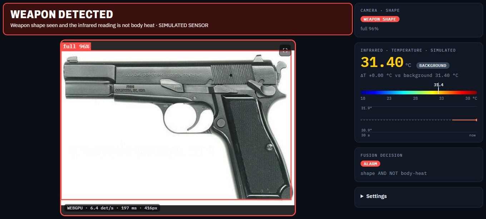

Shape
A YOLO11n detector, trained on our own photos plus 302 vetted pistol images, looks for a weapon in every frame and labels how visible it is: hidden, half, partial or full.
Final Year Project · Computer Systems Engineering · MUST
A camera finds the shape of a gun. An infrared sensor checks its temperature. The alarm fires only when both agree, so a finger shaped like a gun is rejected, because skin is warm and metal is not.

Interactive
Pick what is held in front of the camera and sensor. This runs the same rule as the live console. Background is the 31.5 °C room we measured; readings marked example are typical values, not recordings.
How it works
A YOLO11n detector, trained on our own photos plus 302 vetted pistol images, looks for a weapon in every frame and labels how visible it is: hidden, half, partial or full.
An MLX90614 sensor on an ESP32 streams the object temperature ten times a second over USB. Each reading is compared with a background taken at start-up.
The shape must hold for half a second. Any skin-warm reading in the last 0.8 s cancels it at once, so a finger never beeps, even while the sensor is still warming up.
ALARM = weapon shape AND NOT body heat body heat = object ≥ background + 1.0 °C VETOED = weapon shape AND body heat (finger gun: the camera is fooled, the sensor is not)
No server. The camera plays natively at 30 fps and no video leaves the device.
ONNX Runtime Web on WebGPU, with automatic fallback to WASM on the CPU.
Detection runs in a Web Worker with one frame in flight. Late frames are dropped, and a watchdog restarts a stalled detector.
The ESP32 is read straight from the page with the Web Serial API.
The JS decoder matches Ultralytics on real validation images, and the browser runtime matches Python ONNX Runtime.
Decision-level fusion live; a dual-backbone cross-attention network for the research results.
Results
| Model | Precision | Recall | mAP50 | mAP50-95 |
|---|---|---|---|---|
| Cross-attention fusion network (ours) | 0.920 | 1.000 | 0.995 | 0.820 |
| Late fusion of two detectors | 0.875 | 0.944 | 0.987 | 0.519 |
12 held-out images. Five-fold cross-validation of late fusion: mAP50 0.932 ± 0.052. The models were trained on physics-simulated thermal images, so treat these numbers as an upper bound until real thermal data is collected.
Measured with our sensor
A shirt over a concealed weapon read 29.84 °C, against 33.03 °C for the same shirt with nothing under it, in a 31.49 °C room.
Our simulation assumed a 10–12 °C drop at 24 °C. The effect is real but shrinks in hot rooms, which matters for summer deployment in Pakistan.
Applications
Webcam plus infrared sensor on an ESP32. Detects a gun held at the sensor and rejects warm look-alikes such as a finger gun.
Where: security-staff training, lab demonstrations, teaching sensor fusion.
Replace the single-point sensor with a 32×24 thermal array so the thermal side sees shape too. A person stands about 1 m from the kiosk for a few seconds.
Where: university and office gates, exam halls, banks, hospitals, courts.
Pair existing CCTV with thermal cameras and run the fusion model on an edge computer. Guards get a phone alert with the frame attached.
Where: shopping malls, railway and metro stations, stadiums, airports.
Compact versions for police checkpoints, body-worn cameras and drones over large crowds.
Where: police checkpoints, rallies, concerts, border posts.
Thermal and RGB combined with metal detectors and X-ray in one control room, each covering the others' blind spots, such as a weapon split into parts.
Where: safe-city projects, critical infrastructure, VIP protection.
Hardware and limits